CS184/284A Spring 2025 Homework 3 Write-Up
Link to webpage.
Link to GitHub repository.

Overview
Give a high-level overview of what you implemented in this homework. Think about what you've built as a whole. Share your thoughts on what interesting things you've learned from completing the homework.Part 1: Ray Generation and Scene Intersection
1. Walk through the ray generation and primitive intersection parts of the rendering pipeline.
The ray generation process begins in the camera class, specifically in
the Camera::generate_ray()
function. This function takes normalized image coordinates (x, y) as
input, where (0,0) represents the bottom-left corner and (1,1) the
top-right corner of the image.
These normalized coordinates are first transformed into camera space.
In camera space, the camera is located at (0,0,0) and faces along the
negative Z axis. A virtual camera sensor is set at
z = -1, with dimensions defined by the horizontal and
vertical field of view angles (hFov and
vFov).
The normalized coordinates are then mapped to points on the sensor, and a ray is created starting at the camera origin (0,0,0) and passing through the computed point. This defines the ray’s direction in camera space. Finally, the ray is transformed from camera space to world space using the camera-to-world transformation matrix, which updates both its origin and its direction.
The PathTracer::raytrace_pixel() function leverages this
process to generate rays for each pixel:
-
Ray Sampling: For each pixel with coordinates (x,
y), multiple sample rays (denoted by
ns_aasamples) are generated to implement anti-aliasing. - Perturbation: Each sample perturbs the pixel coordinates slightly using a random sampler, ensuring that rays pass through different parts of the pixel.
-
Ray Creation and Averaging: The
Camera::generate_ray()function is called for each sample, and the radiance along each ray is estimated. These results are then averaged to determine the final color of the pixel.
Once the rays are generated, they are tested for intersection with
scene primitives (such as triangles and spheres). The intersection
tests are implemented in the triangle and sphere classes via the
Triangle::intersect() and
Sphere::intersect() functions.
In both cases, the functions update the ray’s
max_t property to the nearest intersection found, helping
to optimize subsequent intersection tests.
2. Explain the triangle intersection algorithm you implemented in your own words.
I used the lecture slide of Moller Trumbore Algorithm to implement the
triangle intersection algorithm, which increases the efficiency of this
algorithm.
1. The algorithm first computes two edges of the triangle: edge1 and
edge2.
2. It then calculates a vector pvec by taking the cross product of the
ray direction and edge2.
3. The determinant det = dot(edge1, pvec) is calculated,
which is proportional to the volume of the parallelpiped formed by the
ray direction and the two edges. If the determinant is close to zero,
the ray is parallel to the triangle plane, so there's no intersection.
4. For valid intersections, barycentric coordinates (u, v) are
calculated: u = dot(tvec, pvec) * inv_det where tvec = r.o - p v =
dot(r.d, qvec) * inv_det where qvec = cross(tvec, edge1)
5. The barycentric coordinates determine if the intersection point is
inside third barycentric coordinate \(w = 1 - u - v\) implicitly.
6. The intersection distance t along the ray is calculated as t =
dot(edge2, qvec) * inv_det.
7. Finally, for valid intersections, the algorithm updates the ray's
max_t value and, in the full intersection method, also computes the
interpolated normal at the intersection point using the barycentric
coordinates.
3. Images with normal shading for a few small .dae files.

|

|

|
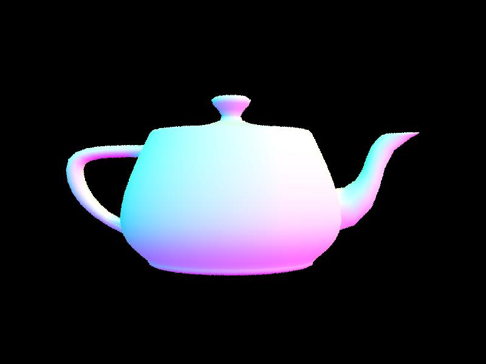
|
Part 2: Bounding Volume Hierarchy
1. Walk through your BVH construction algorithm. Explain the heuristic you chose for picking the splitting point.
The algorithm recursively builds the BVH by first computing an overall bounding box that encloses all primitives. If the number of primitives is below the maximum leaf size, it creates a leaf node. Otherwise, it computes a centroid bounding box of all primitives, selects the longest axis (i.e., the axis with the maximum extent), and then chooses the split point as the midpoint along that axis.The midpoint heuristic aims to balance the tree by roughly dividing the primitives into two groups based on the position of their centroids. If the partitioning is degenerate (all primitives fall on one side), the algorithm defaults to splitting the set in half.
Show images with normal shading for a few large .dae files that you can only render with BVH acceleration.
|
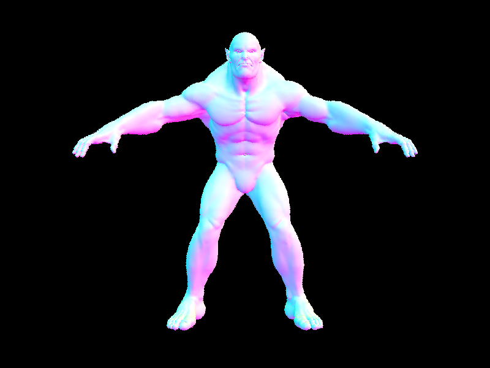
|
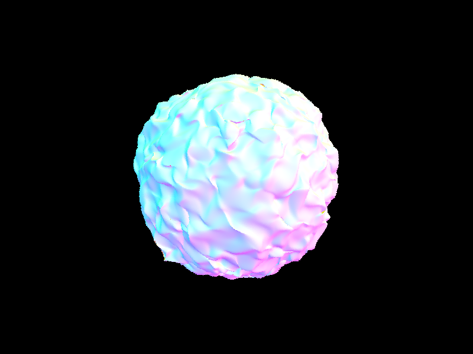
|
|
|
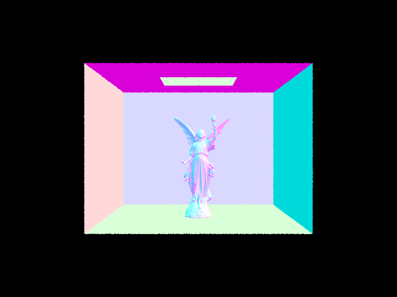
|
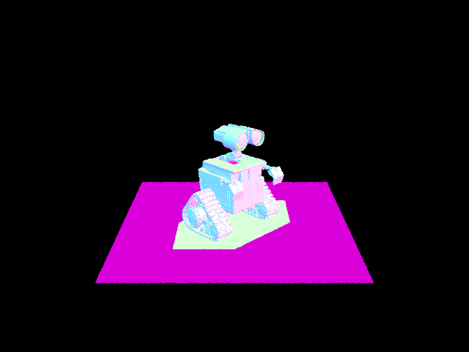
|
|
Compare rendering times on a few scenes with moderately complex geometries with and without BVH acceleration.
For wall-e, with BVH, Building BVH from 240326 primitives takes 0.1627 sec, and rendering takes 0.0678 sec. With the same processor but without BVH, rendering took 45 sec. All other renders above show a similar pattern that BVH significantly speed up rendering.Part 3: Direct Illumination
1. Walk through both implementations of the direct lighting function.
Hemisphere Sampling
For the estimate_direct_lighting_hemisphere function, I
implemented a uniform hemisphere sampling approach with these key steps:
- Created a coordinate system at the hit point with the normal aligned with the Z-direction
- Transformed the outgoing ray direction to this local coordinate system
- Generated multiple sample rays uniformly distributed over the hemisphere
-
For each sample:
- Created a ray from the hit point in the sampled direction
- Checked if the ray intersected with any object in the scene
- If the intersected object was a light source, calculated its contribution
- Applied the BSDF to determine how much light is reflected toward the camera
- Accumulated the contribution weighted by the cosine factor and divided by the PDF
- Averaged the accumulated light contributions over all samples
The PDF for hemisphere sampling is constant at 1/(2π) since we're sampling uniformly over the hemisphere.
Importance Sampling
For the estimate_direct_lighting_importance function, I
implemented an importance sampling approach that specifically targets
light sources:
- Set up the same coordinate system as in hemisphere sampling
- Instead of sampling random directions, iterated through all lights in the scene
-
For each light:
- Generated samples directly from the light source
- Used a single sample for delta lights (point lights) and multiple samples for area lights
-
For each sample:
- Obtained a direction, distance, and PDF from the light's sampling function
- Skipped directions below the surface or with negligible PDF
- Created a shadow ray to check visibility
- If the light was visible, applied the BSDF and accumulated the contribution
- Averaged the contributions from each light's samples
- Summed up the contributions from all lights
The importance sampling approach generally produces less noisy images with the same number of samples, particularly for scenes where light sources occupy a small portion of the hemisphere.
2. Some images rendered with both implementations of the direct lighting function.
|
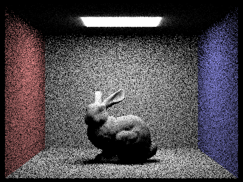
|
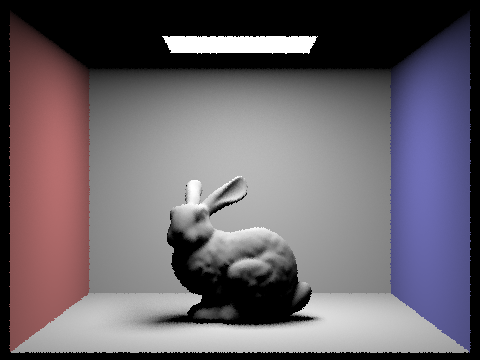
|
3. Noise level when increasing number of light rays with light sampling.
Here is one particular scene with at least one area light and compare the noise levels in soft shadows when rendering with 1, 4, 16, and 64 light rays and with 1 sample per pixel using light sampling. The noise level decreases as the number of light rays increases.|
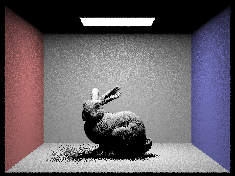
|
|
|
|
|

|
Part 4: Global Illumination
Walk through your implementation of the indirect lighting function.
In our implementation of at_least_one_bounce_radiance, we
combine direct and indirect lighting through recursion.
- Local Coordinate Setup: An orthonormal basis is created at the intersection point using the surface normal, enabling transformations between world and local space.
-
Direct Lighting: We compute immediate radiance using
one_bounce_radiance, which accounts for light arriving directly at the surface. - Indirect Lighting: The BSDF is sampled to determine an incoming light direction, and a Russian roulette strategy (with probability 0.3) decides if further bounces should be computed.
- Recursion: When an additional bounce is allowed and an intersection is detected, the function calls itself recursively. The returned radiance is weighted by the BSDF, a cosine factor, and the pdf, then scaled by the Russian roulette probability.
Some images rendered with global (direct and indirect) illumination with 1024 samples per pixel.
|
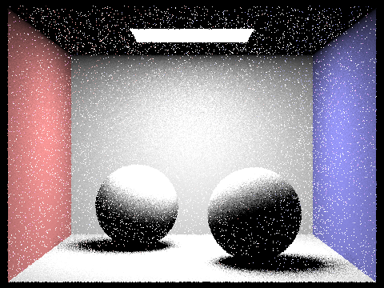
|
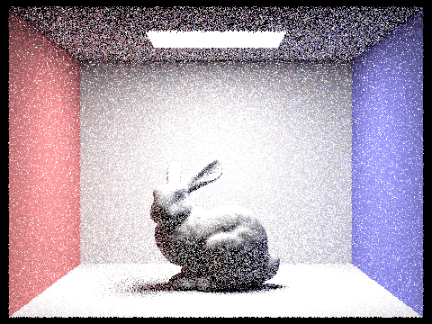
|
One scene and compare rendered views first with only direct illumination, then only indirect illumination. Use 1024 samples per pixel.
|
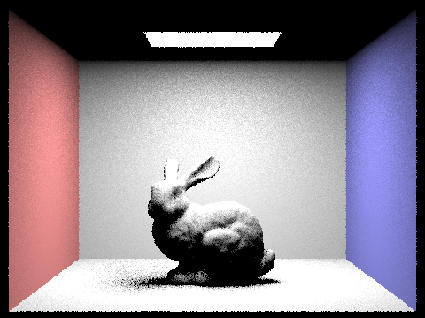
|
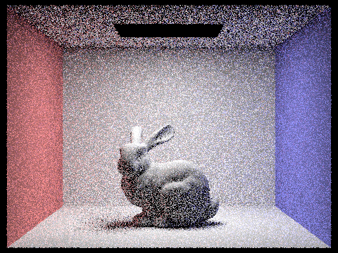
|
max_ray_depth influence on the quality of the rendered image.
Render the mth bounce of light with max_ray_depth set to 0, 1, 2, 3, 4, and 5 (the m flag), and isAccumBounces=false, using 1024 samples per pixel.In 2nd and 3rd bounces, the rendered image reaches higher quality and also with less noise compared to rasterization. After that, the image quality seems to converge.
|
|
|
|
|
|
|
|
For accumulated bounces:
|
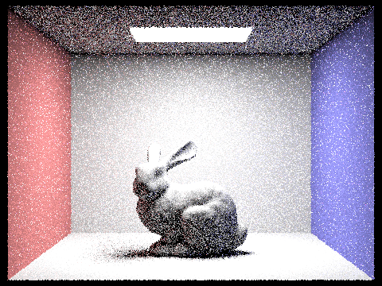
|
|
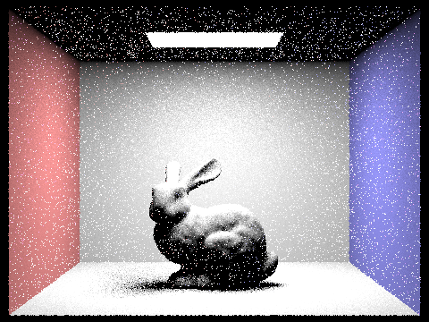
|
|
|

|
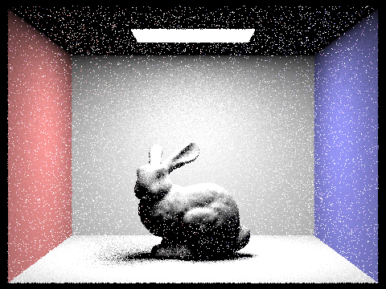
|
For max_ray_depth=100 with Russian roulette (1024 samples per pixel):
Sample-per-pixel rates influence on render quality.
Pick one scene and compare rendered views with various sample-per-pixel rates, including at least 1, 2, 4, 8, 16, 64, and 1024. Use 4 light rays.|
|
|
|
|
|
|
|
Part 5: Adaptive Sampling
Explain adaptive sampling. Walk through your implementation of the adaptive sampling.
Adaptive sampling is a technique that dynamically adjusts the number of samples taken per pixel based on a statistical measure of convergence. The goal is to use more samples only when needed (i.e., in areas of high variance) and to stop early when the pixel's estimated radiance is already reliable.
In our raytrace_pixel function, we begin by defining the
total number of samples to be taken and initializing counters for the
number of samples and accumulated statistics (s1 and
s2).
The function then enters a loop where it processes samples in batches. For each sample, a camera ray is generated and its radiance is computed using global illumination. The sample's illuminance is then used to update our running sums.
After each batch, if more than one sample has been taken, we calculate the mean and variance of the collected samples. We then derive the 95% confidence interval and check if its width is within an acceptable range compared to the mean. If the condition is met, sampling for that pixel stops early.
Finally, the total number of samples used is recorded for visualization. This approach allows the renderer to efficiently allocate computation where it's most needed.
Sampling rate images
Pick two scenes and render them with at least 2048 samples per pixel. Show a good sampling rate image with clearly visible differences in sampling rate over various regions and pixels. Include both your sample rate image, which shows your how your adaptive sampling changes depending on which part of the image you are rendering, and your noise-free rendered result. Use 1 sample per light and at least 5 for max ray depth.|
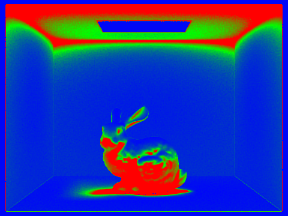
|
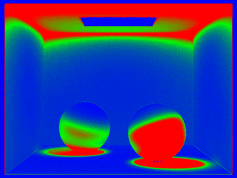
|